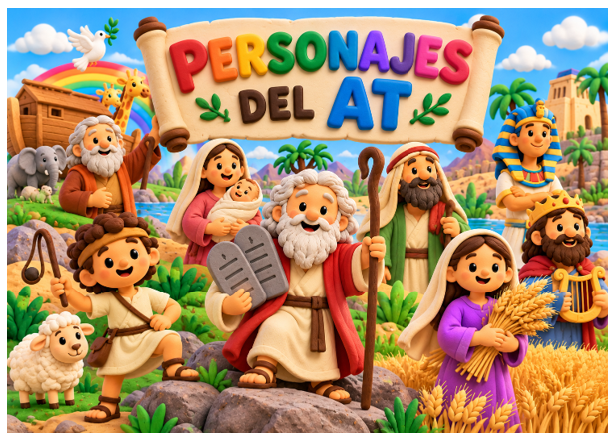
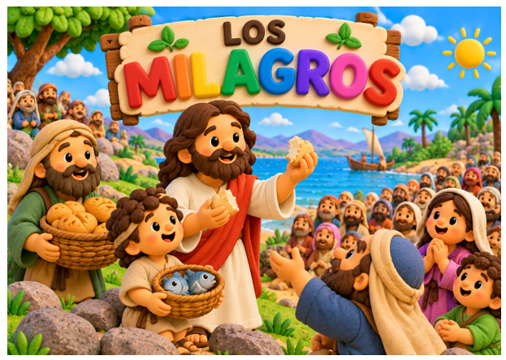
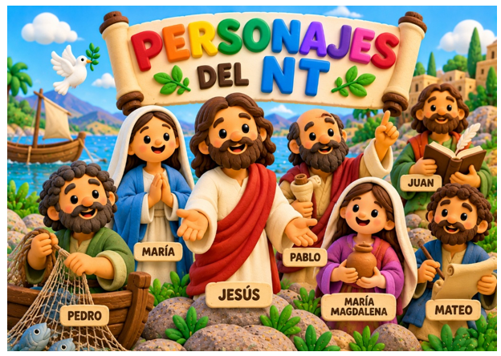

01
Personajes AT
Conocemos a los grandes personajes del Antiguo Testamento.
📖 Ver personajes
02
Las parábolas
Descubrimos las enseñanzas de Jesús a través de sus parábolas.
📖 Ver parábolas
03
Los milagros
Descubrimos algunos de los milagros que realizó Jesús.
✨ Ver milagros
04
Personajes NT
Conocemos a Jesús, María, Pedro, Pablo y otros personajes.
📖 Ver personajes